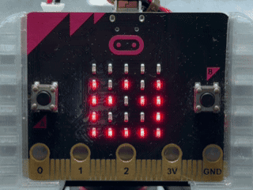
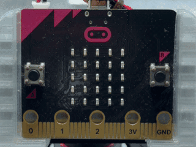
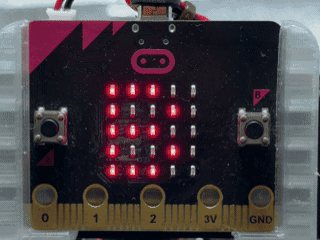
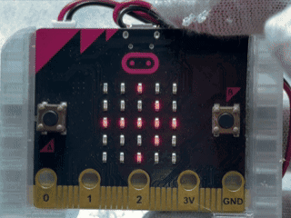
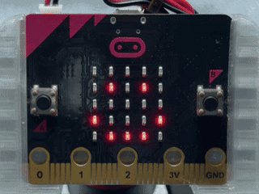
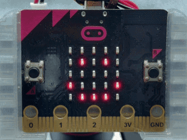
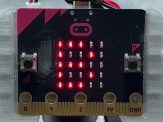

温度をかえて！水のすがたチェッカー 温度を変えて！水のすがたチェッカー
このプログラムでは、micro:bitの温度センサーを使って、今の温度を調べながら、温度によって水がこたい・えきたい・気体にかわる様子をたしかめることができます。 このプログラムでは、micro:bitの温度センサーを使って、今の温度を調べながら、温度によって水が固体・液体・気体に変わる様子を確かめることができます。
使い方
- はじめに温度センサーで今の温度を調べ、数字でひょうじする はじめに温度センサーで今の温度を調べ、数字で表示する
- 0℃いかのときはこたい、1℃から99℃のときはえきたい、100℃いじょうのときは気体のドット絵がひょうじされる 0℃以下のときは固体、1℃から99℃のときは液体、100℃以上のときは気体のドット絵が表示される
- えきたいのじょうたいでAボタンをおすと、温度が一気に100℃になり、気体のドット絵がひょうじされる 液体の状態でAボタンを押すと、温度が一気に100℃になり、気体のドット絵が表示される
- 100℃のじょうたいからさらにAボタンをおすと、110℃、120℃のように10℃ずつ温度が上がり、気体のドット絵がひょうじされる 100℃の状態からさらにAボタンを押すと、110℃、120℃のように10℃ずつ温度が上がり、気体のドット絵が表示される
- えきたいのじょうたいでBボタンをおすと、温度が一気に0℃になり、こたいのドット絵がひょうじされる 液体の状態でBボタンを押すと、温度が一気に0℃になり、固体のドット絵が表示される
- 0℃のじょうたいからさらにBボタンをおすと、－10℃、－20℃のように10℃ずつ温度が下がり、こたいのドット絵がひょうじされる 0℃の状態からさらにBボタンを押すと、－10℃、－20℃のように10℃ずつ温度が下がり、固体のドット絵が表示される
- 気体のじょうたいでBボタンをおすと、今の温度をもう一度調べ、さいしょのじょうたいにもどる 気体の状態でBボタンを押すと、今の温度をもう一度調べ、最初の状態に戻る
- こたいのじょうたいでAボタンをおしたときも、今の温度をもう一度調べ、さいしょのじょうたいにもどる 固体の状態でAボタンを押したときも、今の温度をもう一度調べ、最初の状態に戻る
- げんざいの温度にもどったあと、もう一度AボタンやBボタンをおして水のじょうたいのへんかをたしかめる 現在の温度に戻ったあと、もう一度AボタンやBボタンを押して水の状態の変化を確かめる

ねらい
- 温度センサーで今の温度を調べるたいけん 温度センサーで今の温度を調べる体験
- 温度とこたい・えきたい・気体のかんけいをたしかめる学習 温度と固体・液体・気体の関係を確かめる学習
- 0℃や100℃をさかいに水のじょうたいがかわることへのりかい 0℃や100℃を境に水の状態が変わることへの理解
- ボタンそうさによって温度のへんかをたしかめ、じょうけんによってひょうじがかわる仕組みを知る活動 ボタン操作によって温度の変化を確かめ、条件によって表示が変わる仕組みを知る活動
チャレンジ
- 0℃や100℃の前後で水のじょうたいがどうかわるかをくらべる 0℃や100℃の前後で水の状態がどう変わるかを比べる
- 温度ごとにひょうじされるドット絵を自分で考えて作りかえる 温度ごとに表示されるドット絵を自分で考えて作り替える
- 今の温度を何度かはかり、場所による温度のちがいをくらべる 今の温度を何度か測り、場所による温度の違いを比べる
- 水いがいのものがこたい・えきたい・気体にかわる温度について調べる 水以外のものが固体・液体・気体に変わる温度について調べる
花火までのきょり計（かみなりモードつき） 花火までの距離計（雷モード付）
このプログラムでは、micro:bitの温度センサーを使って、花火が光ったしゅんかんと音が聞こえたしゅんかんの時間のさから、花火までのおおよそのきょりを計算してひょうじします。気温によって音の速さがかわることも学べます。 このプログラムでは、micro:bitの温度センサーを使って、花火が光った瞬間と音が聞こえた瞬間の時間の差から、花火までのおおよその距離を計算して表示します。気温によって音の速さが変わることも学べます。
使い方
- 画面に「ヨウイ」とひょうじされたら、花火が光ったしゅんかんにAボタンをおす 画面に「ヨウイ」と表示されたら、花火が光った瞬間にAボタンを押す
- 次に、花火の音が聞こえたしゅんかんにAボタンをおす 次に、花火の音が聞こえた瞬間にAボタンを押す
- 光ってから音が聞こえるまでの時間を使ってきょりが計算され、「○○m」のように2回ひょうじされる 光ってから音が聞こえるまでの時間を使って距離が計算され、「○○m」のように2回表示される
- 1回目にAボタンをおしてから30秒いないに2回目のAボタンをおさなかったときは「X」がひょうじされ、さいしょのじょうたいにもどる 1回目にAボタンを押してから30秒以内に2回目のAボタンを押さなかったときは「X」が表示され、最初の状態に戻る
- もう一度はかるときはBボタンをおして、次の花火で同じようにそくていする もう一度はかるときはBボタンを押して、次の花火で同じように測定する
- かみなりまでのきょりをはかるときはAボタンとBボタンを同時におして、気温を入力するかみなりモードに切りかえる 雷までの距離をはかるときはAボタンとBボタンを同時に押して、気温を入力する雷モードに切り替える
- かみなりモードではAボタンをおすと気温が1℃上がり、Bボタンをおすと1℃下がる 雷モードではAボタンを押すと気温が1℃上がり、Bボタンを押すと1℃下がる
- 天気よほうなどで調べた外の気温に合わせたら、AボタンとBボタンを同時におしてそくていモードにもどる 天気予報などで調べた外の気温に合わせたら、AボタンとBボタンを同時に押して測定モードに戻る
- かみなりをかんさつするときは安全なたてものの中から行い、かみなりが光ったしゅんかんと音が聞こえたしゅんかんにAボタンをおしてきょりをはかる 雷を観察するときは安全な建物の中から行い、雷が光った瞬間と音が聞こえた瞬間にAボタンを押して距離をはかる

ねらい
- 光はとても速くとどき、音はやく340m/sの速さで進むため、光と音がとどく時間にさができることをたいけんする 光はとても速く届き、音は約340m/sの速さで進むため、光と音が届く時間に差ができることを体験する
- 「時間×速さ＝きょり」のかんけいを、自分ではかった時間を使って考える 「時間×速さ＝距離」の関係を、自分ではかった時間を使って考える
- 音の速さは気温によってかわり、あたたかい空気では速く、つめたい空気ではゆっくり進むことを知る 音の速さは気温によって変わり、あたたかい空気では速く、つめたい空気ではゆっくり進むことを知る
- 花火ではmicro:bitの温度センサーを使い、かみなりでは天気よほうなどで調べた外の気温を入力する理由を考える 花火ではmicro:bitの温度センサーを使い、雷では天気予報などで調べた外の気温を入力する理由を考える
チャレンジ
- ボタンをおすまでの人のはんのう時間によって、計算されるきょりがどのくらいかわるかくらべる ボタンを押すまでの人の反応時間によって、計算される距離がどのくらい変わるか比べる
- 同じ花火を何回かそくていして、そくていしたきょりのへいきんを求める 同じ花火を何回か測定して、測定した距離の平均を求める
- 友だちとそくていけっかをくらべて、けっかにちがいが出る理由を考える 友だちと測定結果を比べて、結果にちがいが出る理由を考える
- かみなりモードを使って、安全なたてものの中からかみなりまでのおおよそのきょりを調べる 雷モードを使って、安全な建物の中から雷までのおおよその距離を調べる
10秒勝負！ボタンで金魚すくい 10秒勝負！ボタンで金魚すくい
このプログラムでは、micro:bitを使って、画面の中を動く金魚をねらい、A+Bボタンを同時におして10秒間でなんびきすくえるかにちょうせんするゲームです。 このプログラムでは、micro:bitを使って、画面の中を動く金魚をねらい、A+Bボタンを同時に押して10秒間で何匹すくえるかに挑戦するゲームです。
使い方
- はじめに「B」と右向きのやじるしがこうごにひょうじされる はじめに「B」と右向きの矢印が交互に表示される
- ゲームを始める前にAボタンをおすと、金魚が動く速さをレベル1、2、3からえらべる ゲームを始める前にAボタンを押すと、金魚が動く速さをレベル1、2、3から選べる
- Aボタンをおすたびにレベルが1、2、3のじゅんにかわり、えらんだレベルが数字でひょうじされる Aボタンを押すたびにレベルが1、2、3の順に変わり、選んだレベルが数字で表示される
- Bボタンをおすと、えらんだレベルでゲームがスタートする Bボタンを押すと、選んだレベルでゲームがスタートする
- さいしょに、金魚をすくうことができる真ん中の3×3のはんいがひょうじされる 最初に、金魚をすくうことができる真ん中の3×3の範囲が表示される
- 1つの光が金魚になり、画面の中を動く 1つの光が金魚になり、画面の中を動く
- 金魚が真ん中の3×3に入ったと思ったら、A+Bボタンを同時におす 金魚が真ん中の3×3に入ったと思ったら、A+Bボタンを同時に押す
- うまくすくえると金魚のドット絵がひょうじされ、すくった回数が1ふえる うまくすくえると金魚のドット絵が表示され、すくった回数が1増える
- 金魚がはんいの外にいるときにA+Bボタンをおすと、しょんぼりした顔がひょうじされる 金魚が範囲の外にいるときにA+Bボタンを押すと、しょんぼりした顔が表示される
- ゲームが始まったあとはAボタンやBボタンをおしても何も起こらない ゲームが始まったあとはAボタンやBボタンを押しても何も起こらない
- 10秒たつと「オワリ」のカタカナが横に流れてひょうじされる 10秒経つと「オワリ」のカタカナが横に流れて表示される
- 「オワリ」のあとに、10秒間ですくった金魚の合計数が数字でひょうじされる 「オワリ」のあとに、10秒間ですくった金魚の合計数が数字で表示される
- けっかのひょうじが終わると「B」と右向きのやじるしの開始画面にもどり、もう一度レベルをえらんで遊べる 結果の表示が終わると「B」と右向きの矢印の開始画面に戻り、もう一度レベルを選んで遊べる

ねらい
- A+Bボタンを同時におすそうさと画面のへんかをむすびつけるたいけん A+Bボタンを同時に押す操作と画面の変化を結びつける体験
- 動く金魚のいちを見ながら、すくうタイミングを考える活動 動く金魚の位置を見ながら、すくうタイミングを考える活動
- 金魚の速さをえらび、レベルによるむずかしさのちがいをくらべる学習 金魚の速さを選び、レベルによる難しさの違いを比べる学習
- 10秒という決められた時間をいしきして集中するたいけん 10秒という決められた時間を意識して集中する体験
チャレンジ
- レベル1、2、3でなんびきすくえるかをくらべる レベル1、2、3で何匹すくえるかを比べる
- 友だちと同じレベルで遊び、すくえた数をくらべる 友だちと同じレベルで遊び、すくえた数を比べる
- 金魚をすくえるはんいをせまくしてむずかしくする 金魚をすくえる範囲をせまくして難しくする
- ゲームの時間や金魚の速さをかえてオリジナルルールを作る ゲームの時間や金魚の速さを変えてオリジナルルールを作る
10秒勝負！ふって金魚すくい 10秒勝負！ふって金魚すくい
このプログラムでは、micro:bitのかそくどセンサーを使って、画面の中を動く金魚をねらい、10秒間でなんびきすくえるかにちょうせんするゲームです。 このプログラムでは、micro:bitの加速度センサーを使って、画面の中を動く金魚をねらい、10秒間で何匹すくえるかに挑戦するゲームです。
使い方
- はじめに「B」と右向きのやじるしがこうごにひょうじされる はじめに「B」と右向きの矢印が交互に表示される
- ゲームを始める前にAボタンをおすと、金魚が動く速さをレベル1、2、3からえらべる ゲームを始める前にAボタンを押すと、金魚が動く速さをレベル1、2、3から選べる
- Aボタンをおすたびにレベルが1、2、3のじゅんにかわり、えらんだレベルが数字でひょうじされる Aボタンを押すたびにレベルが1、2、3の順に変わり、選んだレベルが数字で表示される
- Bボタンをおすと、えらんだレベルでゲームがスタートする Bボタンを押すと、選んだレベルでゲームがスタートする
- さいしょに、金魚をすくうことができる真ん中の3×3のはんいがひょうじされる 最初に、金魚をすくうことができる真ん中の3×3の範囲が表示される
- 1つの光が金魚になり、画面の中を動く 1つの光が金魚になり、画面の中を動く
- 金魚が真ん中の3×3に入ったと思ったら、金魚をすくうようにmicro:bitを軽くふる 金魚が真ん中の3×3に入ったと思ったら、金魚をすくうようにmicro:bitを軽く振る
- うまくすくえると金魚のドット絵がひょうじされ、すくった回数が1ふえる うまくすくえると金魚のドット絵が表示され、すくった回数が1増える
- 金魚がはんいの外にいるときにふると、しょんぼりした顔がひょうじされる 金魚が範囲の外にいるときに振ると、しょんぼりした顔が表示される
- ゲームが始まったあとはAボタンとBボタンをおしても何も起こらない ゲームが始まったあとはAボタンとBボタンを押しても何も起こらない
- 10秒たつと「オワリ」のカタカナが横に流れてひょうじされる 10秒経つと「オワリ」のカタカナが横に流れて表示される
- 「オワリ」のあとに、10秒間ですくった金魚の合計数が数字でひょうじされる 「オワリ」のあとに、10秒間ですくった金魚の合計数が数字で表示される
- けっかのひょうじが終わると「B」と右向きのやじるしの開始画面にもどり、もう一度レベルをえらんで遊べる 結果の表示が終わると「B」と右向きの矢印の開始画面に戻り、もう一度レベルを選んで遊べる

ねらい
- かそくどセンサーでふる動きを読み取るたいけん 加速度センサーで振る動きを読み取る体験
- 動く金魚のいちを見ながら、すくうタイミングを考える活動 動く金魚の位置を見ながら、すくうタイミングを考える活動
- 速さのちがうレベルをえらび、むずかしさのへんかをくらべる学習 速さの違うレベルを選び、難しさの変化を比べる学習
- 10秒という決められた時間をいしきして集中するたいけん 10秒という決められた時間を意識して集中する体験
チャレンジ
- レベル1、2、3でなんびきすくえるかをくらべる レベル1、2、3で何匹すくえるかを比べる
- 友だちと同じレベルで遊び、すくえた数をくらべる 友だちと同じレベルで遊び、すくえた数を比べる
- 金魚をすくえるはんいをせまくしてむずかしいルールを作る 金魚をすくえる範囲をせまくして難しいルールを作る
- 金魚の動く速さをかえて新しいレベルを考える 金魚の動く速さを変えて新しいレベルを考える
顔でわかる！お部屋のかいてき度チェッカー 顔でわかる！お部屋の快適度チェッカー
このプログラムでは、micro:bitの温度センサーを使って、まわりの温度を調べ、暑さや寒さを3つのひょうじょうでわかりやすくかくにんできます。 このプログラムでは、micro:bitの温度センサーを使って、まわりの温度を調べ、暑さや寒さを3つの表情でわかりやすく確認できます。
使い方
- 温度が17℃いかになると、寒いことを表すねむそうな顔がひょうじされる 温度が17℃以下になると、寒いことを表すねむそうな顔が表示される
- 温度が18℃から27℃のときは、すごしやすいことを表すえがおがひょうじされる 温度が18℃から27℃のときは、過ごしやすいことを表す笑顔が表示される
- 温度が28℃いじょうになると、暑いことを表すかなしい顔がひょうじされる 温度が28℃以上になると、暑いことを表すかなしい顔が表示される
- Aボタンをおすと、今の温度が数字でひょうじされる Aボタンを押すと、今の温度が数字で表示される
- 場所をかえて、温度とひょうじょうがどのようにかわるかをくらべる 場所を変えて、温度と表情がどのように変わるかを比べる

ねらい
- 温度センサーでまわりの温度を調べるたいけん 温度センサーでまわりの温度を調べる体験
- 温度の数字とひょうじょうをむすびつけて考える学習 温度の数字と表情を結びつけて考える学習
- 温度によってけっかを分けるじょうけんぶんきの仕組みを知る 温度によって結果を分ける条件分岐の仕組みを知る
- 教室や身の回りのかんきょうに目を向ける活動 教室や身の回りの環境に目を向ける活動
チャレンジ
- ひょうじょうが切りかわる温度をかえて自分なりのかいてきな温度を考える 表情が切り替わる温度を変えて自分なりの快適な温度を考える
- 教室のいろいろな場所で温度を調べてくらべる 教室のいろいろな場所で温度を調べて比べる
- 朝と昼で温度やひょうじょうがどのようにかわるかきろくする 朝と昼で温度や表情がどのように変わるか記録する
- 温度だけでなく明るさも使ったかいてき度チェックにはってんさせる 温度だけでなく明るさも使った快適度チェックに発展させる
顔でわかる！お部屋の明るさチェッカー 顔でわかる！お部屋の明るさチェッカー
このプログラムでは、micro:bitの明るさセンサーを使って、まわりの明るさを調べ、暗いか、ちょうどいいか、明るすぎるかを3つのひょうじょうでわかりやすくかくにんできます。 このプログラムでは、micro:bitの明るさセンサーを使って、まわりの明るさを調べ、暗いか、ちょうどいいか、明るすぎるかを3つの表情でわかりやすく確認できます。
使い方
- まわりが暗いと、ねむそうな顔がひょうじされる まわりが暗いと、ねむそうな顔が表示される
- ちょうどいい明るさになると、えがおがひょうじされる ちょうどいい明るさになると、笑顔が表示される
- まわりが明るすぎると、かなしい顔がひょうじされる まわりが明るすぎると、かなしい顔が表示される
- Aボタンをおすと、今の明るさが0から255までの数字でひょうじされる Aボタンを押すと、今の明るさが0から255までの数字で表示される
- まどの近くや部屋のおくなど場所をかえて、数字とひょうじょうがどのようにかわるかをくらべる 窓の近くや部屋の奥など場所を変えて、数字と表情がどのように変わるかを比べる

ねらい
- 明るさセンサーでまわりの明るさを調べるたいけん 明るさセンサーでまわりの明るさを調べる体験
- 明るさの数字とひょうじょうをむすびつけて考える学習 明るさの数字と表情を結びつけて考える学習
- すうちの大きさによってひょうじをかえるじょうけんぶんきの仕組みを知る 数値の大きさによって表示を変える条件分岐の仕組みを知る
- 教室や身の回りの明るさのちがいに気づく活動 教室や身の回りの明るさの違いに気づく活動
チャレンジ
- ひょうじょうが切りかわる明るさの数字をかえて自分なりのかいてきな明るさを考える 表情が切り替わる明るさの数字を変えて自分なりの快適な明るさを考える
- まどの近くやろうかなどいろいろな場所の明るさを調べてくらべる 窓の近くや廊下などいろいろな場所の明るさを調べて比べる
- 朝と昼で明るさがどのようにかわるかきろくする 朝と昼で明るさがどのように変わるか記録する
- 温度チェッカーと組み合わせて、お部屋のかいてきさを2つのセンサーで調べる 温度チェッカーと組み合わせて、お部屋の快適さを2つのセンサーで調べる
10秒勝負！もちつきパワー 10秒勝負！もちつきパワー
このプログラムでは、micro:bitを使って、10秒間にBボタンを何回おせるかにちょうせんし、おした回数によっておもちが大きくなるゲームを楽しめます。 このプログラムでは、micro:bitを使って、10秒間にBボタンを何回押せるかに挑戦し、押した回数によっておもちが大きくなるゲームを楽しめます。
使い方
- はじめに「B」と右向きのやじるしがこうごにひょうじされる はじめに「B」と右向きの矢印が交互に表示される
- Bボタンをおすと、すぐに10秒間のもちつきがスタートする Bボタンを押すと、すぐに10秒間のもちつきがスタートする
- ゲーム中にBボタンをおすたびに、もちパワーが1ずつふえる ゲーム中にBボタンを押すたびに、もちパワーが1ずつ増える
- もちパワーが10回みまんのときは、小さなおもちがひょうじされる もちパワーが10回未満のときは、小さなおもちが表示される
- もちパワーが10回いじょうになると、中くらいのおもちにかわる もちパワーが10回以上になると、中くらいのおもちに変わる
- もちパワーが20回いじょうになると、大きなおもちにかわる もちパワーが20回以上になると、大きなおもちに変わる
- 10秒たつとゲームが終わり、Bボタンをおした回数が数字でひょうじされる 10秒経つとゲームが終わり、Bボタンを押した回数が数字で表示される
- 20回いじょうおせたときだけ、数字のあとにうさぎのドット絵がひょうじされる 20回以上押せたときだけ、数字のあとにうさぎのドット絵が表示される
- 20回みまんのときは数字だけがひょうじされる 20回未満のときは数字だけが表示される
- けっかのひょうじが終わると「B」と右向きのやじるしの開始画面にもどり、何回でもちょうせんできる 結果の表示が終わると「B」と右向きの矢印の開始画面に戻り、何回でも挑戦できる

ねらい
- ボタンをおした回数を数える仕組みをたいけんする ボタンを押した回数を数える仕組みを体験する
- 回数によってひょうじがかわるじょうけんぶんきの仕組みを知る 回数によって表示が変わる条件分岐の仕組みを知る
- 10秒という決められた時間をいしきして集中する活動 10秒という決められた時間を意識して集中する活動
- もちつきやうさぎのドット絵を使って、お月見のイメージとプログラミングをむすびつける学習 もちつきやうさぎのドット絵を使って、お月見のイメージとプログラミングを結びつける学習
チャレンジ
- 10秒間で20回いじょうを目指してちょうせんする 10秒間で20回以上を目指して挑戦する
- 友だちとおした回数をくらべる 友だちと押した回数を比べる
- おもちが大きくなる回数をかえてむずかしさを調整する おもちが大きくなる回数を変えて難しさを調整する
- 大きなおもちになったときのドット絵やひょうじを自分で考えてアレンジする 大きなおもちになったときのドット絵や表示を自分で考えてアレンジする
本情報の内容 (添付文書、リンク先などを含む) は、 作成日時点でのものであり、 予告なく変更される場合があります。